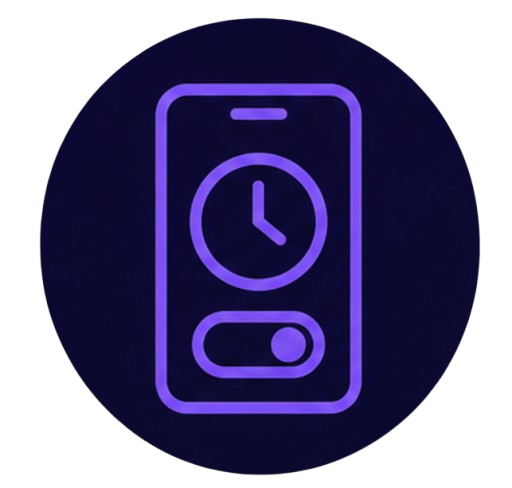
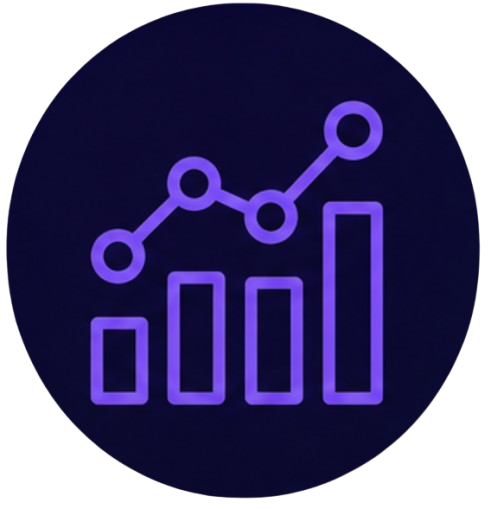
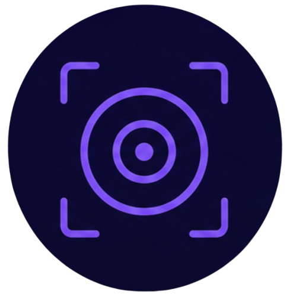
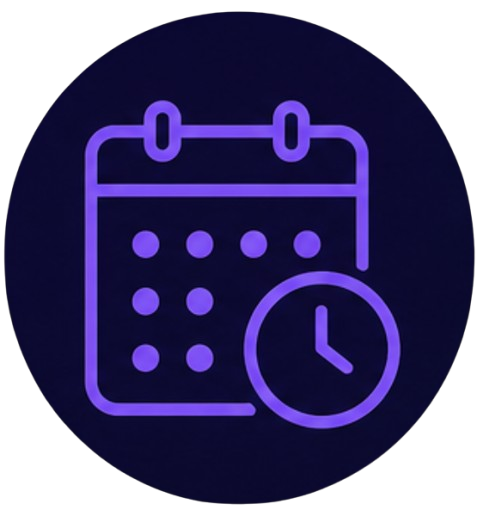

Control de tiempo
El tiempo es el recurso más valioso que tenemos, y en el mundo digital a menudo se nos escapa sin darnos cuenta. Pasar horas frente a las pantallas sin control puede afectar nuestra productividad, relaciones y salud. Aprender a gestionar nuestro tiempo en redes sociales y dispositivos es fundamental para recuperar el equilibrio y vivir de manera más consciente.
Tip del día
Programa descansos cada 45 minutos. Levántate, estira las piernas, bebe agua o simplemente respira profundamente. Estos pequeños descansos recargan tu energía, mejoran tu concentración y evitan la fatiga visual.

Límites de uso de apps
Aplicaciones como StayFree (Android/iOS), Digital Wellbeing (Android) o Screen Time (iOS) te permiten establecer límites diarios de uso por app y recibir alertas cuando los superas.
Cómo aplicarlo en tu día a día: Configura límites de 30-45 minutos para redes sociales y 1 hora para entretenimiento. Cuando recibas la alerta, cierra la app y dedica ese tiempo a otra actividad (leer, caminar, conversar).

Estadísticas de uso
Herramientas nativas como Bienestar Digital (Android) o Tiempo de pantalla (iOS) te muestran desgloses detallados de cuánto tiempo pasas en cada app, cuántas veces desbloqueas el teléfono y a qué horas eres más activo.
Cómo aplicarlo en tu día a día: Revisa tus estadísticas al final de cada semana. Identifica patrones: ¿en qué apps pierdes más tiempo? ¿A qué horas usas más el teléfono? Usa esa información para ajustar tus hábitos.

Modo de enfoque
Funciones como Modo No molestar, Modo enfoque (Android) o Enfoque (iOS) silencian notificaciones y llamadas durante horas clave, permitiéndote concentrarte sin interrupciones.
Cómo aplicarlo en tu día a día: Activa el Modo enfoque durante tus horas de trabajo o estudio (ej. 9:00-13:00). Solo permitirás llamadas de contactos importantes. Verás cómo aumenta tu productividad al eliminar distracciones.

Descansos programados
Técnicas como la regla 20-20-20 (cada 20 minutos, mira a 20 pies de distancia durante 20 segundos) o recordatorios para levantarte y estirarte cada 30-45 minutos ayudan a reducir la fatiga visual y muscular.
Cómo aplicarlo en tu día a día: Pon un temporizador cada 45 minutos. Al sonar, levántate, camina un poco, mira por la ventana o haz algunos estiramientos. Esto mejora la circulación y renueva tu energía.